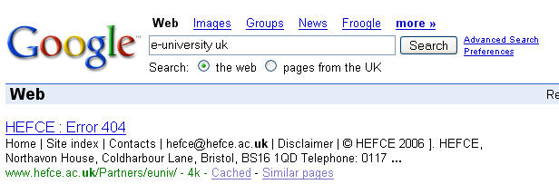

July 23, 2007
Original Cholera Map on Google Earth?
I've been wondering about what would make for a good educational demo of Google Earth'n'data mashups, and "rediscovering" the water borne transmission of cholera looks promising...
I found a copy of Snow's 1854 cholera data (possibly?!) so now I need:
- a way of turning the map position data into geo-data;
- an 1854 Google Earth map overlay for the appropriate part of London (something like this maybe?).
{kind=link}
If you know if anyone has done this already, please drop me a line... :-)
July 22, 2007
Mashup Tools Frenzy
A week away from a daily play, and my feedreader now contains way too many unread messages. Prompted by this CNET News post on The battle of the mashup editors, I also realise that I probably haven't been keeping up with updates to the Google Mashup Editor or Microsoft Popfly since I played with them the day the invites originally came out... (aaaaaarrrrrrrrrrrrrggggggghhhhhhhh - not enough time to play with the big toys, let alone keep up with the little ones...........!)
So - top of the to do list is to catch up with feature releases from Yahoo Pipes, Microsoft Popfly and Google Mashup Editor (as well as the other various Google APIs, like the AJAX feed API).
Come to think of it, I haven't even played with IBM's QEDWIki at all, yet... or the Intel Mashmaker tool (though I guess access to that isn't available at the mo...).
As everyone seems to be releasing feed autodiscovery - at least, Yahoo Pipes and Google AJAX API both offer this now (as does this PHP library) - I feel I really should try to build something that makes use of this... the only question is, what? Something String'n'Glue related, maybe?
I'm also hoping that when the OpenLearn folks finally start moving the OpenLearn feeds from the dev server onto the public one, they'll make the feeds autodiscoverable... Although just what possibilities that will open up for feed related creativity, I'm not sure yet!
PS I notice that I get live suggestions from my Firefox search widget (at least with Google as the search engine).

It'd be really neat - particularly for navigational/known item queries, where you know the result you want to find - if below the bar in the drop down live suggestions it also gave the top three hits for the current query-in-progress, live search style, treating them as clickable links rather than search terms...
July 02, 2007
2 minute 47s content chunks - perfect...
From the rather wonderful Wonderland blog, a report on the rather intriguing Afterworld, apparently as told by it's creator-writer Brent Friedman...
...but first, here is Afterworld - Episode 1...
So I took an old idea that I always wanted to do as a TV series, but was always told it would be way too expensive. I wanted it to be an internet series, told for today's attention-deficit audiences, in 2-3 min bites, but I didn't want to sacrifice the scope or drama. ... So we came up with this notion of an animated drama, told in bites, and our first season was going to be 130 episodes. ... We realized that we'd created modular entertainment: it was designed to be a daily delivery, mon-fri, for 6 months. What we thought is... we can distribute on mobile overseas: Europe and Asia and South America have a much more developed mobile system than we do. We can distribute over the internet, in conjunction with network play: take 5 episodes and smush them together, and you have a 15m episode, which can be used as interstitials.Take 2 weeks of episodes, and smush, you get a half hour show. Sony's approach was, we love multiplatform capabilities, but we really love that we can sell this as half-hour television, and offer all sorts of other opportunities to each territory on a multiplatform basis. So we wrote the stories in 2-week episode arcs. Everything works just as a 3-min and as part of a bigger whole.
...
We put this together, there was a study done in Europe by a consortium of advertisers and media buyers, and they were looking to find the optimum timelength in mobile ents for retaining attention for ad placement.
...
So folks are looking to the digital medium and asking, how much will people remember? 2m 47s is the magic number: after that length, something shown in the intro, the preroll, would be retained 100% by the key demographic. 100%! So our episodes are 2m and 57s.
The three minute single folks seem to have got it right, then...! I wonder if there's also something here in terms of effective presentation technique - like making a major point every three minutes or so? Or reinforcing a point every three minutes?
Anyway, anyway - this idea of producing content chunks that work as independent, standalone items and yet can be rolled together into longer, coherent packages is one that feels right to me (as touched on in (Not?) Talking about Multimedia).
Ideally, though, the chunks might use different media (a paragraph of text, a short video, an audio clip) or have a different "force" - explanatory text, one side of an argument, the framing of a question or exercise - and (the hard one, this) be capable of being delivered in different bundles - the movies or audio clips being rolled together, for example (as with the Afterworld episodes).
I'm not at all sure how to achieve this - yet - but I hope to try various ways out over the next few months. For internal readers, some doodlings will be available here. Things will be pretty standard fare on that site for the first month or two as I try to identify blendable component parts, but any and all feedback/suggestions/experiments will be much appreciated on how we might develop this line of thinking, or if, indeed, it is worth pursuing at all...
June 19, 2007
Last.fm: in it for the ads...?
My first day listening to Last.fm for a bit (no particular reason for being away from it, just one of those things), and the last few songs that have played have all been new/recent releases...
Hmmm... like maybe they're playing new stuff they want me to go and buy...?
The big search engines, and their commentators, often post a weather report when the ranking algorithms change, to let people know their position in the search engine organic listings may change.
As more and more sites get into social recommendation systems, mediated with a bit of secret sauce, voodoo algorithm magic, the ones that succeed will be the ones that perform for their users. That is, the ones with trusted algorithms.
When the algorithms change, so can the feeling of the site.
So I wonder, have things changed at last.fm, or is it just one of those playlist things...?
May 28, 2007
(Not Really About) Institutional Blogging - Codes of Conduct
In a week or two, I'm second fiddle to Martin Weller in a workshop on edu-blogging in the OU (see the OUseful Calendar for details). One of the things I guess will be covering is what is and what isn't appropriate content.
So here's something that's perhaps a little close to the bounds of good sense...
The OU prides itself on being a distance education institution. We will shortly be requiring all our students to have internet access. We know that many of our students are in full time employment. Server stats presumably tell - err - someone, when our students are logging in (as academics running online courses we aren't currently privy to server stats... make of that what you will...)
We have internationally registered students - who pay more, I think, because we don't receive HEFCE funding for them. Presumably, some of our international students are in different time zones to the UK.
We are open to students of all backgrounds - presumably including some who don't observe "Christian" holidays.
I would guess - though I don't know - that many of our students study early in the morning, during evenings, and at weekends (even a short, 10 point course has an expectation of a nominal 10 hours study per week). Maybe we have survey data on this? That is, data on daily and weekly study patterns over 24 hour and 7 day cycles?
The OU's original mission was to be "'Open as to people, open as to places, open as to methods and open as to ideas"; more recently has come the recognition that time is often a barrier to entry, and one that is often discussed in terms of presentation patterns and course workloads.
So what sort of helpdesk support, particularly computer helpdesk support, should we be offering as we move towards requiring our students to have internet access? 24/7 most of the time? 24/7 in the Tesco sense (i.e. 16/1, 24/4, 22/1, 6/1)? Or something rather less? Like this maybe?

That is, 13.5/7, except Bank Holidays and Wednesdays...
If a significant proportion of our students are studying "out-of-hours", are they being fairly supported? Especially when you take into account that it's during the early hours computer systems do seem to go down, albeit often only temporarily...
(Hmm, now what prompted this post, do you think? ;-)
May 21, 2007
Announcement Round Up
A quick post to round up a couple of announcements while I listen to the Pop Said (the best of the Darling Buds), which is as much fun to listen to now as it was almost 20 years ago (gulp).
(If you haven't come across the Darling Buds here's a Darling Buds video clip on youTube:
Okay - so here's the announcements: heads up again for the final call for papers for the OpenLearn Conference:
The call for papers is open for the openlearn 2007 conference: researching open content in education. Deadline for submission by short papers (~1000words) is 31st May 2007. The conference will be held 30-31 October 2007 near The Open University in Milton Keynes, UK. There will be no charge for attendance with priority for registration given to those responding to the call for papers. Selected papers will be developed for publication in a special issue of the Journal of Interactive Media in Education.
The four main themes are:
- agenda
- Sustainability
- User experience
- Software and tools
Further information can be found at: http://www.open.ac.uk/openlearn/openlearn2007.Forms for submission of papers can be found at http://www.open.ac.uk/openlearn/openlearn2007/papers.php and should be emailed to openlearn-conference@open.ac.uk by 31st May 2007.
Second up - I'm doing a talk in the Library ICT Suite on Wednesday (almost as described on the OUseful calendar) on Social Bookmarking - sort of... as well as a quick overview of social bookmarking (in the vein of delicious et al., for anyone who is new to the idea of social bookmarking), I'll also be covering different ways of piping links into display spaces (web pages, Moodle environments, personal portals etc.) and looking at how to bookmark searches and multimedia items, among other things (which may be of interest if you have been to one of my previous SB workshops). The workshop will be run using a partial attention format, and networked computers will be available - though you can still bring a wireless laptop if you prefer.
I'm also getting to go on a couple of jollies, to the Google API/Developers Day in London on May 31st, and also the Yahoo/BBC Backstage hack day:


Feel free to get in touch if you fancy meeting up at either of those (or for a pint after...)
Anyway, back to the Darling Buds... I never did see them play live (I don't think... or the Voice of the Beehive, come to that) though I did once manage to catch both Transvision Vamp and The Primitives on the same bill at Warwick University; and took a hit promoting Daisy Chainsaw a few years later...
Here's all of them in a Splashcastmedia player:
...along with a dodgy goth show, too...
May 12, 2007
So That's What Second Life's for...
Internal readers will probably know that the OU has a presence in Second Life, on Cetlment Isle (search the groups if you want to get there...).
I haven't been in for a bit (can't stand the 10 minute download each time, hate the latency on the interface, etc etc) but I think I get an inkling of how we're going to use the space... ;-)

...pushing text as images...
At least it gives you something to do in world (i.e. read)...
Hmmm... what really gets me about Second Life is that there are several people here in the OU being given time and resource to look at it...
...whereas there are dozens of other "web 2.0" tools, apps and approaches that could potentially offer real benefit to students now that aren't being looked at, that aren't being explored/played with, that aren't having resource allocated to their development.
April 19, 2007
open.ac.uk Goes Nowhere...
Four or five years ago, whenever you'd hear someone giving out a URL, they'd start out by saying: "H T T P colon slash slash W W W dot..." and so on...
Two or three years ago, the 'http://' requirement largely became deprecated. Instead, you knew it a URL was being given out because it would start 'W W W'.
One or two years ago, most websites made the 'www.' optional. For example, I typically use the form example.com when I want to enter the URL of a site...
...and more often than not it works okay...
... but not, (currently: 19/4/07), with open.ac.uk ...
Ho hum....
PS I don't think people even bother giving URLs now, do they? "Just google open university and you should find it..."
April 05, 2007
Re:Play - The Future of Sports Gaming? "I'll Take it From Here..."
In a neat post on the question of whether virtual representations of sporting events [will] become part of the online rights economy, Martin Belam describes the use of Cricinfo 3D to provide over-by-over cricket match coverage:
Rather than just describing the action in near real-time, they show you, using a game engine to simulate the match being played... As each ball in the over is bowled, a Shockwave plug-in on the web-page illustrates the action.
You can select the camera angle you want to view the action from, either choosing TV style coverage, a fixed position like from the stumps, or a view through the bowler or the batsman's eyes, or from the point of view of the wicket keeper.
I've sort posted on this topic before, and see Cricinfo 3D as being another indicator along the path to "I'll take it from here" video gaming.
By that, I mean sports simulations in which the state of the game at which the player starts is a duplicate of the state of the game in the real world.
For example:
- in a cricket sim, rather than watch a replay of a particular delivery, you could take the bat and see if you could do better. The fielding positions and the actual flight of the ball (captured using something like Hawk Eye) would be faithful - at least at the start of the shot!
- in a snooker sim, you could pick up a (real) 147 break making frame after the reds have been cleared.
- in an F1 race, you could take over the drive from a real driver. The AI controlling the other drivers could directly simulate an actual race for at least as long as the time as your actions have no influence on any other particular car.
- in a round of golf, you could matchplay an actual game against someone else - or pick up the hole at any point in a championship winning round.
So what? you may say... Sounds a bit dull... just replaying some old game...
Ah yes - but what about if you 'take it from here' during the actual event and play along, maybe split screen style?
Or maybe during the TV replay, your digital ents box offers you a re:play? That is, you get to try the shot, etc. (maybe even 'for real', wii style ;-)
It'd be one way of filling time while the adverts are on!
What this boils down to is interactive sports viewing; or in other words: "I could have made that one - here, I'll show you...".
I don't know know if the "realtime re:play or "I'll take it from here" gaming already exists - maybe it does? (if so, can you drop me a line?)
But it's one of the things I'll be looking out for as we start to write our new short course on game design and interactive media...
April 02, 2007
The Future of Music
Old news now in the blogosphere - EMI lets go of DRM on iTunes (a good summary - and links to the press releases - here) - but a useful hook for this post - who's interested in MP3 downloads when you can recompile the source?
NIN (that's Nine Inch Nails) look set to release all the tracks on their forthcoming album as Garageband 'source' files;

NIN have actually been doing this with one-off tracks for a couple of years, and encouraging remixers to upload their mixes as part of a remix competition. In addition to Garageband files, releases have also been made for other audio mixing software.
A slightly different approach is taken by U-Myx who require users to use the U-Myx software - and pay for the downloads.
But for a similar result - the user gets to play... ;-)
This approach is something I have dreamed of over the last 15 years as wouldn't-it-be-good-if idles, and anticipated eagerly more recently. My expectation over the last 5 years or so was that CD singles/albums would start to include remix applications/software studios on that medium - but I've been tracking it as a download reality on and off for the last 6 months or so (though it's been happening for longer).
That said - my expectation of getting the 'src' on the CD was predicated on the supply of the remix application on the CD too, rather than it being pre-installed on the users' computer.
The next thing I'm looking out for is a 'live by machine' gig, where a club franchise has real hardware/synths being played at a distance by the band, who are maybe in another venue owned by that club chain?
For this, you have to imagine banks of synths receiving (MIDI) control signals over the net from the real musicians playing live elsewhere.
This is not so much online jamming (or here: eJamming) - where you mix realtime audio feeds from other musicians on the web with your own efforts - as real time creation of the music from audio generators...
.. a bit like the way audio in games works today, and how MIDI created audio in computer games is going.
And the next step after that?
Well, you won't be downloading MP3. Instead I'm looking forward to a time when we'll be downloading a Garageband-like mix to our Garageband-like stereos - its audio card will generate sounds using onboard synths and samplers and do a real time audio mix for you.
So if you like to tinker with a graphic equaliser on your current stereo, the Garageband-like remix player is gonna be a whole load of fun... ;-)
April 01, 2007
Just In Case...
Unlikely - but anyway... did anyone out there happen to record the hour long "Hawkwind: Do Not Panic" documentary that aired on BBC Four at 9pm on March 30th?
If so, I'd be really grateful if you could lend me a DVD or video copy... ;-)
UPDATE what the **** was I talking about - DVD copy..... See the program, courtesy of YouTube, via a show on my Splashcast Blast from the Past music channel:
I've also popped a show on the channel featuring a (bootlegged?) video of a 1984 Hawkwind gig...
January 31, 2007
Click On...
A new six part OU/BBC Radio 4 co-produced programme on IT related issues - Click On (Open2.net website) - airs tonight: BBC Radio 4 at 9pm UK time...
You should be able to listen live on the web via the Radio4 Click On website.
Press release here.
[Disclaimer: I'm one of the OU Academic Advisers on this series, which basically means we get to comment on the development of, and a preview of, the script for each edition of the programme. I'll post more about this role in a later post.]
January 19, 2007
"Through My Eyes" in Second Life
With the recent open sourcing of the Second Life client, it'll be interesting to see what innovations spring from it. One idea I'm quite taken by, and which would provide a good first step on 'coding with the SL client" course or tutorial, is a simple SL viewer widget which would, if the 'owner' was in world, display what the owner was seeing at the time. It's also the sort of widget I could imagine spreading like crazy on sites like MySpace.
The "Through My Eyes" widget (aka "Being Me", after the similarly themed "Being John Malkovich") could also make for an interesting demonstration of presence, methinks?
All sorts of opportunities for frankly pointless fun arise. Users who were happy for others to see the world through their eyes could register their details to a "Through Random Eyes" service, which could provide almost minutes of idle entertainment.
More generally, I wonder to what extent there already are 'attentional presence' widgets out there. For example, widgets that lists the books I am currently reading (may based on a live feed of my library book loans) or the films I am watching (if online DVD rental firms expose that information as a feed, for example), or even books I have just bought. The last.fm service exposes the tracks you have just listed to through its API (a feature used to good effect by Sleeventoez) so it would be easy enough to feed this information through to a widget.
Related to this, I was toying with the idea of a simple browser plugin that would use the statex webservice to display the URL of the last page I loaded into my browser (the code would be trivial - simply update a particular statex global web variable to the URL of the current page*) but I'm not ready yet for revealing that much about myself!
* something like this works as a bookmarklet, for example:
javascript: window.location="http://statex.ning.com/updateState.php?id=25&pwd=test&item="+window.location
And finally, on a similar related topic, I was chatting with Ian Martin today about a webtop like departmental display board that could be fed by people's "work related attentional state". This might, for example, list details of the courses or projects people were currently and actively working on, or bids they were preparing, for example.
Instant messaging systems like Google chat (and probably many others - but I have little or no experience of them) let you customise the message that is displayed alongside your presence indicator, so the attentional status board would just elaborate on this.
It may even be interesting to integrate this in some way with a to-do list, e.g. to display the things I am currently doing, or perhaps those that I have 'just done' whenever I tick them off on the list...
Integration with a time tracker widget would also be interesting...
...although the idea that this is essentially the voluntary adoption of personal timesheets (and more than that - actually clocking in and out of tasks) is quite scarey... ;-)
January 17, 2007
Google Picasa Online...hmmmm...
Okay, so some of you may have noticed that images are behaving - err - oddly - on this site in the last couple of days. I've just started saving my screenshots to an iPhoto gallery on my Mac and then syncing them to Google Picasa web galleries via a Picasa Mac plugin, and then pulling the images into the blog from my public Picasa gallery...
...only sometimes, they aren't being pulled in...
I have no idea why this is happening, but will try to explore*. In the meantime, maybe the Picasa experiment wasn't such a good idea.
Anyone know of a 'like flickr, but for screenshots' service? This would be a Good Thing for techie bloggers, I think, with lots of scope for reuse and an opportunity for company marketers to place good quality screenshots showing the best features for bloggers to reuse...
...without the danger of being goatse'd, of course...
Maybe one for Ning to host in the short term as a variant of Ning photos? Ah - it's already there: http://screenshots.ning.com - maybe I'll start to use this instead?
(What is it with these photo gallery sites that they don't give you an obvious link to the image - even if they do watermark in exchange for this convenience?)
I wonder, has anyone picked up on the no-brainer follow-on of a screencast video site on Ning too? Aha - http://screencasts.ning.com/ ;-) (Not much used though, if the Most recent... listing is anything to go by...
* just been playing a bit more, and for some reason my browser keeps failing to make a connection to the Google Web Picasa server my photos are on... it's the first sign Google monster - your days are numbered... if you can't cope with the load, get out of the server farm. Maybe Amazon EC2 can help you out? ;-)
January 12, 2007
Blog Tag
Okay - so here's my pick up on blog tag from John Tropea...
- I'm an information junky, and subscribe to far more feeds than I could sensibly keep up with if I did my day job properly ;-)
- I once ran a company ("Drayhouse Promotions Ltd") promoting bands - when we formed the company we said to ourselves we knew we'd have made it if we ever promoted Hawkwind. As promoters, we were offered two big bands early on in our 'career' - Hawkwind and Nirvana. Of course, we booked Hawkwind and lost a bundle. Nirvana immediately released Nevermind and went huge...
- I'm a fan of the Luddite cause (Luddism was big in Marsden, near Huddersfield, where I was brought up). The Luddites were the skilled workers of their time, rebelling against technologies that deskilled their craft.
- Close friends since 1987 all call me Monty (it's not a very long story: anagram('tony')+'m').
- My top five, err, cultural things, are maybe Labyrinths, the art of Yves Tanguy, Appetite for Destruction, An Inspector Calls, Brautigan.
And as such is this game of tag, Brautigan leads into the first person I'll tag - who introduced me to Brautigan: Andy Theyers, thence John Naughton, Graham Attwell, Marc Eisensdtadt and Brian Lamb (who hasn't been posting much of late?).
January 04, 2007
DRM Problems Compounded by IPR Intransigence - 4oD
Couldn't resist - from the Channel 4 4oD site, which will allow users to download, on demand, a wide variety of Channel 4 content:
Will you offer 4oD for the Macintosh?Category: 4oD | Sub Category: Getting Started
Unfortunately not at the launch of 4oD.This is an industry-wide issue caused because the accepted Digital Rights Management (DRM) system used to protect online video content, which is required by our content owners, is not compatible with Apple Mac hardware and software. The closed DRM system used by Apple is not currently available for licence by third parties and there is no other Mac-compatible DRM solution which meets the protection requirements of content owners. Unfortunately, we are therefore unable to offer 4oD content to Mac users at this stage.
Good old Apple... content rights are sorted (in this case, at least... and yes, I know that's a simplistic view...) - now the problem's with the technology platform. I guess what Apple really want is stuff to go through iTunes, for a fee*, so that they can topslice.
Know what - I was gonna treat myself to Mac Mini for use as a home entertainment hub. Maybe a PC would be better...?
PS and what is it with the BBC and RealPlayer..........?
* To clarify that point, the 4oD service is primarily pay-to-play (any number of times during the 48 hr rental period, although I think some content has an outright purchase option...)
December 02, 2006
OU Online Games and Interactives
In a bid to attract new students, the OU appears to be making use of online games to try and grab the attention of the 'younger' student market: Kitchen Konundrum game.

Although I'm heavily involved in outreach related activities, I only discovered this through an OU Press Release celebrating a national "Best Online Game" award this game recently won from the British Interactive Media Association.
Just in passing, here are some more games and interactives on OU websites you may not be aware of:
- RoboDoodle: online doodling package; developed for The Big Draw, an annual Campaign for Drawing event. RoboDoodle also feeds random images through to the RoboFesta-UK website;
OU Robotics Outreach Group games:
- Sliding 8 puzzle
- RoboFesta-UK jigsaw
- Towers of Hanoi
- Robot related word search
- Robotics Mini-course with interactive quiz
- Online logo
KMi Games:
- Memory game - Bletchley Park
- Subhunt - Bletchley Park
- Children's Code Machine - Bletchley Park
- Dangers on the Building Site - Safety Centre
- Dangers in the Kitchen - Safety Centre
- Bright at Night - Safety Centre
- Fire Safety Challenge - Safety Centre
- Safety Quiz - Safety Centre
- The Recovery Position - Safety Centre
Open2.net
- Impact Planet Earth: Quiz: Try our interactive quiz.
- Magnetic Mayhem: Quiz: Test your knowledge on magnetic mayhem with our quiz.
- Your diet costsAn interactive guide to the impact of your diet
- Your trip at what cost?: Compare journeys and their environmental effects
- Transport: An interactive page to show the most economical and environmentally friendly forms of travel, part of the BBC/OU's programme website for 'Choices'
- Postcards From The Future: Our interactive feature will reveal how your actions today shape the seaside of tomorrow
- Digital Microscope:
- How We Digest: An interactive exploration of how the digestive system works.
- Food Timeline: An interactive guide to the history of food.
- Explore: Pasture To Plate - just the facts: Basic HTML version of the information included in the Pasture to Plate interactive
- Interactive timelineInteractive timeline of Leonardo's life, part of the OU/BBC's programme website for 'Leonardo'
- The Prisoner's Dilemma: A page explaining and linking to an interactive demonstration of the 'Prisoner's Dilemma'. Part of the OU/BBC's programme website for the Reith Lectures 2002: The Philosophy of Trust.
- What's your learning style?: Everyone has a distinct learning style. Discover yours.
- Explore Mars: Explore the red planet with our clickable guide
- Mission to Brighton: Launcher for the Mission To Brighton interactive.
- Universe Timeline: A timeline of the development of the Universe
- Solar System Facts: Explore the vital statsitics of our corner of the Universe
- You Are Here: A guide to our position in space
- Mapping slave history: An interactive map locating the towns and places associated with the slave history in northern england in the 18th century.
- They're everywhere: Our interactive looks back at the rapid growth of computers in everyday life.
- Measure the AU: Explore the Transit of Venus with our interactive - including a calculator to help convert your measurements into the AU
Check out the Open2.net site for more....
If there are any you think I'm missing (I'm sure there are...), please post a comment with a link...
September 24, 2006
If DRM Scares You, What About BRM?
In the bits of the blogosphere I follow, DRM (digital rights management) is often considered to be a Bad Thing because of the restrictions it places on how the purchaser can use whatever it is that has had DRM applied to it.
How much more uproar would there be if it were conceivable that DRMd songs, for example, could 'infect' or taint DRM free files with copy protection? Just imagine it - viral DRM!
At a time when some of the world's largest media companies are beginning to see value in allowing their catalogue items to be shared, it is maybe worth casting an eye over at the biotech firms, and in particular the seed 'manufacturers', who are developing gene technologies that cause second generation plants to be sterile, thus preventing purchasers of first generation seed from saving seed from the plants they have grown. If I was minded to coin a phrase to describe this approach, Biological Rights Management (BRM) or Genetic Rights Management (GRM) are two that come to mind.
And note that I don't mean BRM in the sense of patents on genes, which is difficult enough to think clearly about. This is about genetically engineering biological reproductive processes so that copy protection is built in.
Known widely as Terminator Technology, there is spectrum of concerns amongst many opponents of this form of genetic engineering, ranging from the purely economic (farmers can't buy seed one year, then save it for the next - they have to buy it in each year) to fears that TT plants may contaminate, through pollination, non-BRMd plants.
Many plants are propagated seedlessly, of course, traditionally through the use of cuttings, and how seedless fruits propagate is another story altogether, but for us to try to engineer in what amounts to copy protection, using approaches that I assume are rather more lab-based than traditional cross or selective plant breeding ever was, concerns me somewhat.
What brought this to my attention was an article in the latest Organic Way magazine, which I still receive having signed up to and never left what was the Henry Doubleday Research Association (HDRA) - now rebranded as 'Garden Organic' - ten or more years ago, when life was more balanced and I still had an allotment!
My interest piqued, I had a little dig around for recent news stories about the state of the art in this sort of technology, and found a news item from the activist group banterminator.org about Monsanto recently buying a company that pioneered the development of Terminator gene technology.
Dvorak Uncensored also picked up on that announcement and had a little rant about it.
Time maybe to start watching this one before the biological rootkits get out of hand? And I don't just mean in the sense of Japanese knotweed!
June 12, 2006
Using Educational Institutional Blogs to Raise "Brand Awareness"
Whilst this blog is very definitely not part of the official OU communications machinery, it does have the potential act as a communications channel for OU news and information that might also be of interest to external readers.
One thing I've started to aks myself is how the OU can start to make use of these channels for raising brand awareness, and perhaps even targeted advertising (just to raise the question, nothing sinister ;-)
For example, the OU has a close relationship with the BBC and co-produces many high profile broadcast offerings - Rough Science, for example, and Coast to name but two. (For a more complete listing, visit the Open2.net website.)
Should I be dropping mention of forthcoming progammes, with links to the relevant website, for example (like when the Money programme did Search/Google?)
And then there are the employment opportunites. As with any large organisation, there is a always steady trickle of current appointments/job ads, some of which are likely to be of interest to readers. For example, at the moment there are these posts open:
Strategic Systems IT Development Manager, The Open University Library
Do you have the strategic vision to lead the development of leading edge systems and services to meet the needs of our users in a rapidly changing learning/technological environment?
You will lead the Librarys strategic IT systems development by providing specialist technical advice to Senior Management. You will ensure that there is a strategic fit with University-wide systems developments by liaising with key stakeholders in the organisation as well as horizon scanning new technologies and relevant research. You will support the development of our user-centred electronic library and its integration into the Universitys virtual learning environment.
Communications Manager (Open Content and Web Projects), Communications
The Open University revolutionised learning. Our Open Content Initiative (OCI) will make educational resources freely available on the Internet, with state of the art learning support and collaboration tools to connect learners and educators. We are looking for an experienced and creative individual to join the OCI team, managing online communications with key stakeholders and developing and implementing the communications plan. We are particularly looking for someone comfortable and familiar with all web technologies.
You will work as a full-time dedicated member of the Open Content Initiative Management Team but will be based within The Open Universitys Communications unit. This means you will be able to draw on existing OU expertise in media relations and web developments (including SEO).
Developers / Graduate Trainee Developers, Computing Services, Systems Development
We are looking for enthusiastic developers to work on a variety of system developments in the Universitys central Computing Services department. Current projects include implementation of Siebel CRM software, the development of staff and student portals and electronic assessment tools.
Systems Programmers / Graduate Trainee Systems Programmer, Computing Services, Technical Services
We are looking for bright, self-motivated professionals to work in a team responsible for Distributed Computing Infrastructure Systems, providing network, server and desktop services to staff. The team operates in a mixed environment which is constantly evolving and you should be flexible and able to adapt to new technologies.
(If you apply, please mention where you first saw the ad on the OUseful blog!;-)
As far as I know, the job ads pages were some of the first OU pages to offer RSS feeds (OU current vacancies feed). Was this driven by external drivers I wonder? Is the jobs market/recruitment industry hot on feeds? (Hmm - I need to check out that feed again to see if they are using any semantic markup to really make the most of the feed medium. Is there any standard RDF for marking up job ads, I wonder?)
We're also large enough to have a media relations/press office that puts out one or two news releases a week (they even have an OU news wire (i.e. RSS feed)).
And then there are our courses - not just for undergrads (like the entry level Design for the Web Course, or the Web ApplicationsCertificate) or postgrads (like the Computing for Commerce and Industry (CCI) Diploma/Masters programme), but also increasingly in the area of short CPD courses.
One of the things I've started to think about is how I'd feel (and how the readership would feel) if banner ads for courses, BBC/OU programmes etc. were (very occasionally) inserted at the bottom of a post by the system (you'll notice perhaps I blog from a site rooted on http://blogs.open.ac.uk).
And finally, there is informal 'consultancy'. One of the extra-curricular things I do as well as this blog is to help run the OU Robotics Outreach Group and the RoboFesta-UK website (this latter site generates around 15, 000 page impressions a month, and carries a couple of rotating OU short course banner ads).
The group has been around for about 5 years now and is increasingly approached for information and advice about organising robotics related outreach events. One thing I've started to think about is whether we should be askig people to link back to our site from their pages via a small 'OU-ROG Consulting' (!) or 'In association with RoboFesta-UK' graphic when we do provide them with advice.
Why I should want to do this OU promotion stiff via the blog is perhaps not obvious unless you have had some sort of involement with the OU. For all its faults, most people who work there are passionate about the OU Mission (even in the face of creeping corporatisation). The OU does good stuff and we're proud of it:-)
I do wonder how I (and you, dear reader...) would feel if OU related banners appeared at the end of every 10th post, say, with something relevant to the blog buit very obviously OU advertising related. Would it compromise the nature of the blog? Or would it in a sense add value by providing targeted OU related news to a well defined niche audience? (answers on the back of a postcard via the comments...)
Anyway - "normal" ad-free service will resume next post...;-)
May 19, 2006
Towards a Global Online University
The following has just appeared on the OU intranet News site, which looks like being a really interesting event (I've seen a speaker list, but don't think it's public yet... interesting line up though (more when I can...)):
Monday 5 June 2006, Berrill Lecture Theatre, Walton Hall, 10.30-13.00.The Forum will hear short presentations by thought leaders from Amazon, Nokia and the BBC, amongst others, to help us consider "Towards a Global Online University: Future Scenarios for Delivering Higher Education". An open discussion session will follow.
Your insights and questions are sought on topics including the design of next generation ICT, novel business models for HE in an internetworked world, and trends and advances in pedagogy, both online and offline.
Video-conferencing facilities will be available in the regions and the event will be webcast via Stadium.
If you have OU SAMS access, you can submit questions or comments in advance via a link on the Stadium webpage.
Just in passing, I've been Googling towards global online university site:open.ac.uk for a bit in the hope of posting about this event as soon as it was out there (but hey, it's Friday, and the intranet news site is almost public...), and was amused to get more than a few references to this:
TOWARDS THE GLOBAL E-UNIVERSITY: QUALITY OR MEDIOCRITY?
a talk from December, 2000, by our previous VC, which I think developed some of the ideas introduced briefly in this artcle from March of that year: Towards a Global e-OU.
The UK e-University has of course recently been finally laid to rest. And as it's Friday, I just can't resist not posting this any more:

(We all know what a 404 is, right? When I checked out that Wikipedia link, I couldn't help but chuckle again at the thought that this error code is sometimes returned when a server is configured not to fulfill the request and not reveal the reason why....! And for some reason, politics came to mind;-)
Not Beta, But Gamma or Delta?
Half-listening to a recent episode of TalkCrunch on my commute to work today, there was a brief discussion about 35-40 mins in to the podcast that the web 2.0 way was not to release beta software in the sense of 'feature complete, but potentially buggy' code, but instead to release early and often, function incomplete but useable applications, and then work towards feature completion during the beta phase.
So is this really beta testing? Or should we coin a new variant designation? Next in the alphabet is gamma, I think, then delta.
Delta's interesting - in many sciences it refers to a small change in quantity (so perhaps this is a release phase with regular 0.0.1 version increments?).
But this breaks the alphabetic progression. So how's about redesignating the web 2.0 style beta as a gamma release, where the users might expect stability in operation, but potentially regular and even significant feature upgrades?
Then when the app comes out of gamma, it can go into a period of delta progression, tiny tweaks and fixes until the next round of private alpha, limited beta and then public gamma releases that will culminate in the next version up, 'stable delta' release?
(I'm not computer software engineer, so perhaops gamma and delta releases are already recognised?)